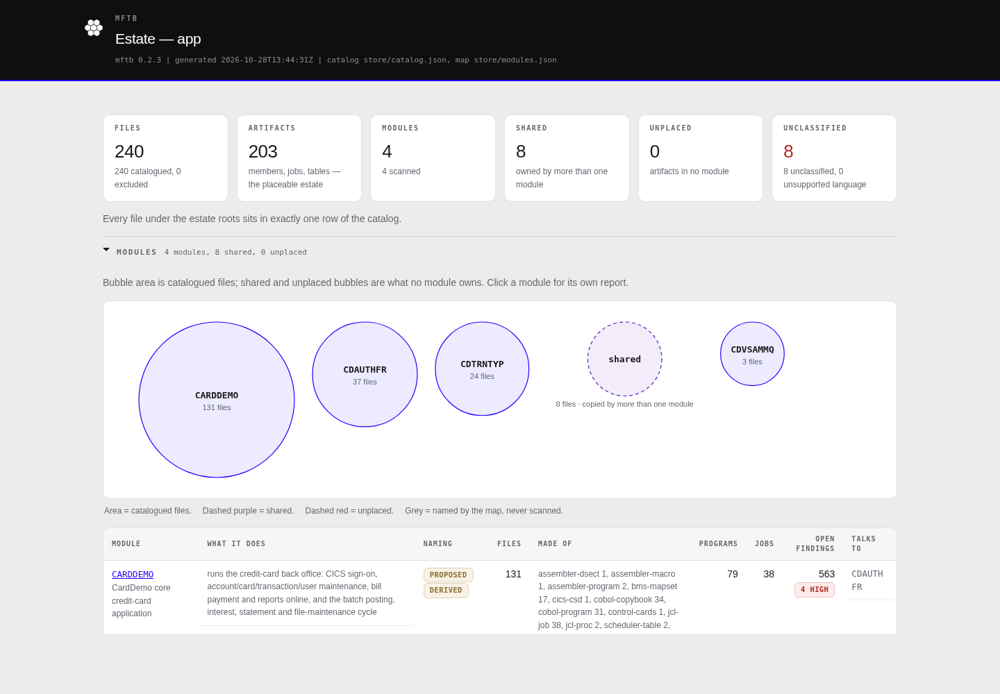
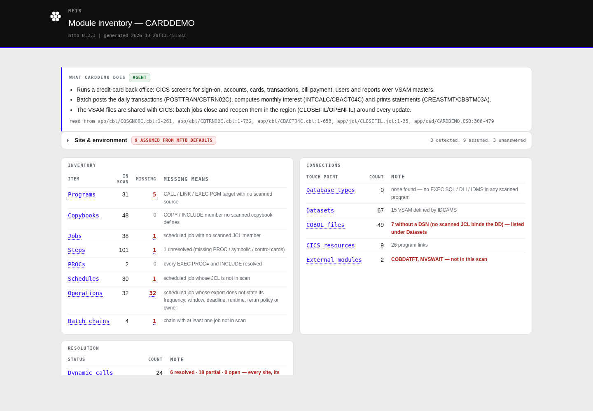
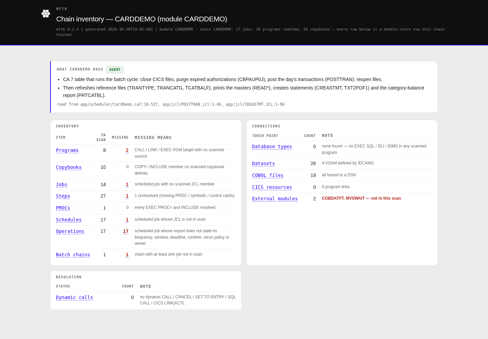
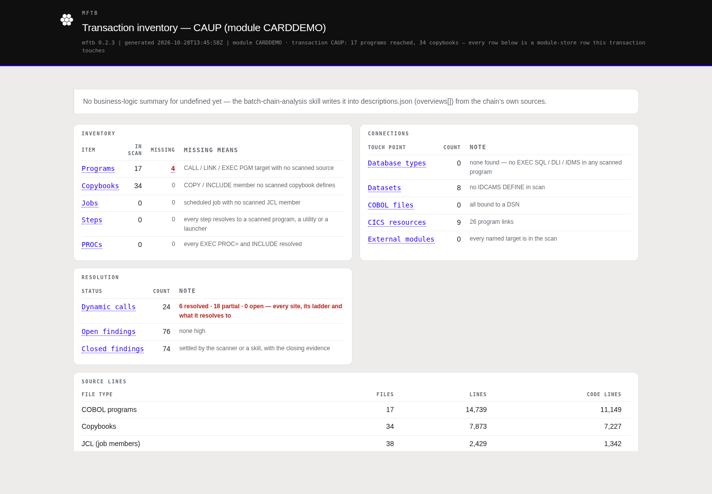

The problem
A modernization plan is only as good as the inventory under it. Guessed call targets, unknown job order and assumed environment facts are where migrations slip.
- CardDemo mixes CICS screens, nightly and monthly batch, VSAM, DB2, IMS and MQ across one core app and three optional extensions.
- Questions a customer asks first: what is in scope, what depends on what, what runs at night, which screens write which data, and what we do not know yet.
- Rule of this demo: every fact cites
path:lineor a store file; anything unproven stays an open finding or evidence request.
scan deterministic scanner fact agent Devin's cited conclusion recommendation target-state proposal for the customer to decide
Estate map scan agent
The sweep catalogued all 240 files; Devin proposed the module split, and mftb modules --check proved every one of the 203 placeable artifacts sits in exactly one module, the shared set, or unplaced.
| Module | What it is | Programs | Jobs | TRANIDs | Data |
|---|---|---|---|---|---|
CARDDEMO | Core card back office | 31 | 38 | 18 | 15 VSAM clusters |
CDAUTHFR | Pending authorizations | 8 | 5 | 3 | IMS, DB2, MQ |
CDTRNTYP | Transaction-type maintenance | 3 | 3 | 2 | DB2 |
CDVSAMMQ | MQ account/date inquiry | 2 | 0 | 2 | MQ |
8 copybooks are shared (account, card, customer, COMMAREA, date, user layouts); 24 proven cross-module connections; 45 open estate asks.

Module report: CARDDEMO scan agent
31 programs, 38 jobs, 2 PROCs, 6 scheduler tables. Devin wrote all 71 descriptions and 7 business summaries from source, each with a cited basis; mftb descriptions --check --strict passes.
- Environment profile: 29 fields - 10 detected, 9 defaulted (shown as ASSUMED), 10 unanswered. None answered on the customer's behalf.
- Dynamic calls: 24 XCTL sites - 3 resolved by literal; Devin's annotations narrow the 3 menu-table sites; 18 COMMAREA-driven sites stay partial.
- Findings: 4 high (CBIMPORT missing DD
CARDOUT; environment topology, masking policy, test LPAR unknown), 174 medium.

Batch chain: CA 7 table CARDDEMO scan agent
Chosen because it runs POSTTRAN (app/scheduler/CardDemo.ca7:70), whose program CBTRN02C is the only code that validates and posts customer transactions to accounts and balances.
- 17 jobs, 29 steps; 3 chain asks closed by Devin with cited facts (SDSF CEMT steps, CBPAUP0J lives in CDAUTHFR); 28 open.
- New evidence request: nothing in the estate produces
DALYTRAN.PS, the posting cycle's main input. - Secondary chain
MONTHLY-InterestCalculation: INTCALC/CBACT04C interest = balance x rate / 1200; fees are a stub (CBACT04C.cbl:518); run date is hard-coded.

Online transaction: CAUP account update scan agent
Chosen because COACTUPC is the only core screen that rewrites two masters (account and customer) in one task, and both CICS files are RECOVERY(NONE).
- Region-wide: 18 TRANIDs, 2 entry points, 2 menus, 14 screens, 7 datasets shared with batch, 1 job submitted from CICS (CR00 -> TRANREPT).
- CAUP asks: 4 variable XCTL targets (medium), 18 mapsets without BMS source, screen order data-driven - recorded by Devin as a cited note.

Modernization plan recommendation
Waves are ordered so nothing moves before what it reads; the ordering comes from the call, job and data graphs in the store. Full plan with citations: MODERNIZATION-PLAN.md.
| Wave | Content | Graph evidence for the order |
|---|---|---|
| 0 | Answer evidence requests; freeze 8 shared copybooks as data contracts | Every cross-module edge goes through them |
| 1 | 15 VSAM clusters to a relational schema; merge type tables with CDTRNTYP DB2 | Batch and online both read/write these |
| 2 | Daily posting cycle + monthly interest as orchestrated jobs | POSTTRAN writes TCATBALF which INTCALC reads |
| 3 | 18 CICS screens to APIs + web screens, sign-on/menu first | CC00 -> CM00/CA00 dispatch every other screen |
| 4 | Extensions: CDTRNTYP, then CDVSAMMQ, then CDAUTHFR (IMS + DB2 + MQ) | Each depends on core menus, sign-on and shared layouts |
Top evidence requests for the customer
- Environments, test LPAR and data masking policy (the 4 high profile findings).
- Confirm the 9 ASSUMED profile fields (z/OS level, RACF, Endevor, DFSORT, compiler, ...).
- Who delivers
DALYTRAN.PS, and when. - Missing source: HLASM COBDATFT/MVSWAIT, REPROCT control cards, TXT2PDF REXX, BMS, IMS DBDs.
- Keep the CICS file-close batch window, or allow concurrent online/batch?
- Implement fees in INTCALC, or migrate as-is?
What the scanner did vs what Devin did
| Deterministic scanner | Devin (skills) |
|---|---|
| Catalogued and typed 240 files | Proposed the 4-module split; passed modules --check |
| Parsed COBOL, JCL, PROCs, CSD, CA 7 and Control-M; built calls, datasets, lineage | Wrote 71 descriptions + 7 business summaries from source; passed descriptions --check --strict |
| Detected or defaulted 29 profile fields; flagged defaults ASSUMED | Kept every default as an evidence request; answered none for the customer |
| Traced 24 dynamic-call sites, 3 resolved | Narrowed menu-table sites with cited reasoning; left run-time ones partial |
| Built chains and online closure; filed asks | Closed asks only with cited facts; added notes and new asks |
| Rendered every HTML report | Wrote the modernization plan, labelling every target as a recommendation |
modules.json, annotations.json, descriptions.json, chainnotes.json, onlinenotes.json) are the only hand-written inputs.